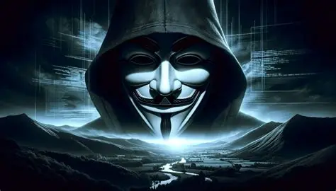

O mundo foi hackeado em 2012
O que significa "a realidade foi hackeada"?

Em essência:
É a ideia de que vivemos numa realidade alterada, manipulada ou artificial, e que em 2012 algo interferiu nesse “sistema”, causando:
De onde vem essa ideia?
Embora não haja uma origem única, a teoria se baseia em várias crenças e eventos que convergiram em torno de 2012:
1. Calendário Maia e 21/12/2012
2. Teorias da Simulação
3. Mandela Effect (Efeito Mandela)
4. Eventos Estranhos e Bizarros
5. Cultura Pop e Mídia
Interpretação simbólica
Mesmo sem acreditar literalmente, muitas pessoas usam essa ideia para expressar sensações como:
Exemplos de mudanças pós-2012, segundo essa visão: